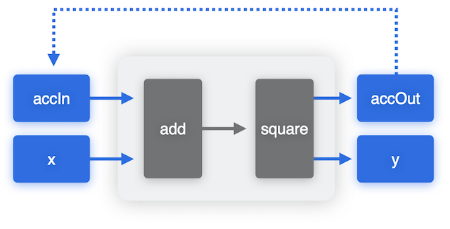
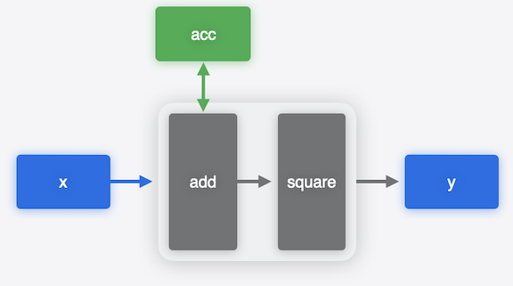
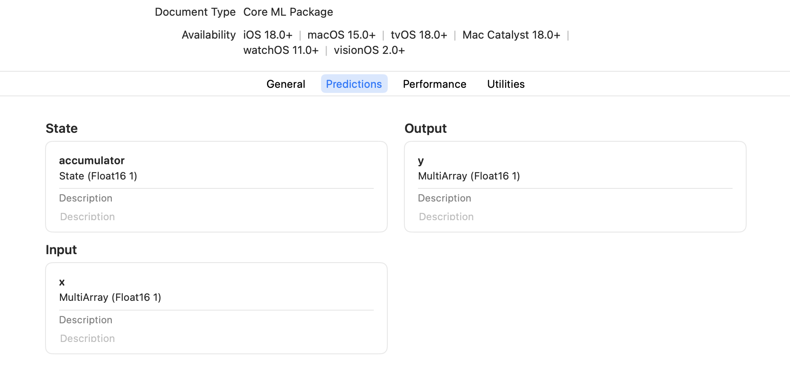

Stateful Models#
This section introduces how Core ML models support stateful prediction.
Starting from iOS18 / macOS15, Core ML models can have a state input type.
With a stateful model, you can keep track of specific intermediate values
(referred to as states), by persisting and updating them across
inference runs. The model can implicitly read data from a state, and write back to a state.
Example: A Simple Accumulator#
To illustrate how stateful models work, we can use a toy example of an accumulator that keeps track of the sum of its inputs, and the output is a square of the input + accumulator. One way to create this model is to explicitly have accumulator inputs and outputs, as shown in the following figure. To run prediction with this model, we explicitly provide the accumulator as an input, get it back as the output and copy over its value to the input for the next prediction.
# prediction code with stateless model
acc_in = 0
y_1, acc_out = model(x_1, acc_in)
acc_in = acc_out
y_2, acc_out = model(x_2, acc_in)
acc_in = acc_out
...

With stateful models you can read and write the accumulator state directly. You don’t need to define them as inputs or outputs and copy them explicitly from output of the previous prediction to the input of the next prediction call. The model takes care of updating the value implicitly.
# prediction code with stateful model
acc = initialize
y_1 = model(x_1, acc)
y_2 = model(x_2, acc)
...

Using stateful models in Core ML is convenient because it simplifies your code, and it leaves the decision on how to update the state to the model runtime, which maybe more efficient.
State inputs show up alongside the usual model inputs in the Xcode UI as shown in the snapshot below.

Registering States for a PyTorch Model#
To set up a PyTorch model to be converted to a Core ML stateful model, the first step is to use the register_buffer API in PyTorch to register buffers in the model to use as state tensors.
For example, the following code defines a model to demonstrate an accumulator, and registers the accumulator buffer as the state:
import numpy as np
import torch
import coremltools as ct
class Model(torch.nn.Module):
def __init__(self):
super().__init__()
self.register_buffer("accumulator", torch.tensor(np.array([0], dtype=np.float16)))
def forward(self, x):
self.accumulator += x
return self.accumulator * self.accumulator
Converting to a Stateful Core ML Model#
To convert the model to a stateful Core ML model,
use the states parameter
with convert()
to define a StateType
tensor using the same state name
(accumulator) that was used with register_buffer :
traced_model = torch.jit.trace(Model().eval(), torch.tensor([1]))
mlmodel = ct.convert(
traced_model,
inputs = [ ct.TensorType(shape=(1,)) ],
outputs = [ ct.TensorType(name="y") ],
states = [
ct.StateType(
wrapped_type=ct.TensorType(
shape=(1,),
),
name="accumulator",
),
],
minimum_deployment_target=ct.target.iOS18,
)
Note
The stateful models feature is available starting with iOS18/macOS15 for the mlprogram model type.
Hence, during conversion, the minimum deployment target must be provided accordingly.
Using States with Predictions#
Use the make_state()
method of MLModel to initialize the state, which you can then pass to the
predict()
method as the state parameter. This parameter is passed by reference;
the state isn’t saved to the model. You can use one state,
then use another state, and then go back to the first state, as shown in the following example.
state1 = mlmodel.make_state()
print("Using first state")
print(mlmodel.predict({"x": np.array([2.])}, state=state1)["y"]) # (2)^2
print(mlmodel.predict({"x": np.array([5.])}, state=state1)["y"]) # (5+2)^2
print(mlmodel.predict({"x": np.array([-1.])}, state=state1)["y"]) # (-1+5+2)^2
print()
state2 = mlmodel.make_state()
print("Using second state")
print(mlmodel.predict({"x": np.array([9.])}, state=state2)["y"]) # (9)^2
print(mlmodel.predict({"x": np.array([2.])}, state=state2)["y"]) # (2+9)^2
print()
print("Back to first state")
print(mlmodel.predict({"x": np.array([3.])}, state=state1)["y"]) #(3-1+5+2)^2
print(mlmodel.predict({"x": np.array([7.])}, state=state1)["y"]) #(7+3-1+5+2)^2
Using first state
[4.]
[49.]
[36.]
Using second state
[81.]
[121.]
Back to first state
[81.]
[256.]
Warning
Comparing torch model’s numerical outputs with the converted Core ML stateful model outputs to verify numerical match has to be done carefully, as running it more than once changes the value of the state and hence the outputs accordingly.
Note
In the Core ML Tools Python API, state values are opaque.
You can get a new state and pass a state to predict,
but you cannot inspect the state or change values of tensors in the state.
However APIs
in the Core ML Framework allow to inspect and modify the state.
Creating a Stateful Model in MIL#
You can use the Model Intermediate Language (MIL) to create a stateful model directly from MIL ops. Construct a MIL program using the Python Builder class for MIL as shown in the following example, which creates a simple accumulator:
import coremltools as ct
from coremltools.converters.mil.mil import Builder as mb, types
@mb.program(input_specs=[mb.TensorSpec((1,), dtype=types.fp16),
mb.StateTensorSpec((1,), dtype=types.fp16),],)
def prog(x, accumulator_state):
# Read state
accumulator_value = mb.read_state(input=accumulator_state)
# Update value
y = mb.add(x=x, y=accumulator_value, name="y")
# Write state
mb.coreml_update_state(state=accumulator_state, value=y)
return y
mlmodel = ct.convert(prog,minimum_deployment_target=ct.target.iOS18)
The result is a stateful Core ML model (mlmodel), converted from the MIL representation.
Applications#
Using state input types can be convenient for working with models that require storing some intermediate values, updating them and then reusing them in subsequent predictions to avoid extra computations. One such example of a model is a language model (LM) that uses the transformer architecture and attention blocks. An LM typically works by digesting sequences of input data and producing output tokens in an auto-regressive manner: that is, producing one output token at a time, updating some internal state in the process, using that token and updated state to do the next prediction to produce the next output token, and so on.
In the case of a transformer,
which involves three large tensors
that the model processes : “Query”, “Key”, and “Value”, a common
optimization strategy is to avoid extra computations at token generation time
by caching the “Key” and “Value” tensors and updating them incrementally to be reused in
each iteration of processing new tokens.
This optimization can be applied to Core ML models by making the Key-Values,
as explicit inputs/outputs of the model.
Here is where State model types can also be utilized for more convenience and
potential runtime performance improvements.
For instance, please check out the 2024 WWDC session for an
example that uses the Mistral 7B model
and utilizes the stateful prediction feature for improved performance on a GPU on a macbook pro.
The code for converting and deploying Mistral 7B model is released in Hugging Face Mistral7B Example along with the
blog article.
Example: Toy Attention Model with Stateful KV-Cache#
To help you better understand how to make an attention model stateful with key cache and value cache, here is a toy example.
We start with a toy model with simple attention, where the query, key, and value are calculated by a linear layer
and then fed into the scaled_dot_product_attention.
This toy example only focuses on stateful kv-cache, so it omits other details such as multi-head, multi-layer,
positional encoding, final logits, etc.
import torch
import torch.nn as nn
class SimpleAttention(nn.Module):
def __init__(self, embed_size):
super().__init__()
self.query = nn.Linear(embed_size, embed_size)
self.key = nn.Linear(embed_size, embed_size)
self.value = nn.Linear(embed_size, embed_size)
def forward(self, x):
Q = self.query(x) # (batch_size, seq_len, embed_size)
K = self.key(x) # (batch_size, seq_len, embed_size)
V = self.value(x) # (batch_size, seq_len, embed_size)
return torch.nn.functional.scaled_dot_product_attention(Q, K, V)
class ToyModel(nn.Module):
def __init__(self, vocab_size, embed_size):
super().__init__()
self.embedding = nn.Embedding(vocab_size, embed_size)
self.attention = SimpleAttention(embed_size)
self.fc = nn.Linear(embed_size, embed_size)
def forward(self, x):
embedded = self.embedding(x)
attention_output = self.attention(embedded)
return self.fc(attention_output)
To use key cache and value cache for attention, we can write a new class SimpleAttentionWithKeyValueCache which
inherits the SimpleAttention, and the in the forward function we re-use previously computed k and v,
and fill the newly computed k and v back to the cache.
class SimpleAttentionWithKeyValueCache(SimpleAttention):
"""Add kv-cache into SimpleAttention."""
def forward(self, x, attention_mask, k_cache, v_cache):
Q = self.query(x)
newly_computed_k = self.key(x)
newly_computed_v = self.value(x)
# Update kv-cache in-place.
q_len = Q.shape[-2]
end_step = attention_mask.shape[-1]
past_kv_len = end_step - q_len
k_cache[:, past_kv_len:end_step, :] = newly_computed_k
v_cache[:, past_kv_len:end_step, :] = newly_computed_v
# The K and V we need is (batch_size, q_len + past_kv_len, embed_size).
K = k_cache[:, :end_step, :]
V = v_cache[:, :end_step, :]
return torch.nn.functional.scaled_dot_product_attention(
Q, K, V, attn_mask=attention_mask
)
Then the toy model with kv-cache will look like:
class ToyModelWithKeyValueCache(nn.Module):
def __init__(self, vocab_size, embed_size, batch_size, max_seq_len):
super().__init__()
self.embedding = nn.Embedding(vocab_size, embed_size)
self.attention = SimpleAttentionWithKeyValueCache(embed_size)
self.fc = nn.Linear(embed_size, embed_size)
self.kvcache_shape = (batch_size, max_seq_len, embed_size)
self.register_buffer("k_cache", torch.zeros(self.kvcache_shape))
self.register_buffer("v_cache", torch.zeros(self.kvcache_shape))
def forward(
self,
input_ids, # [batch_size, seq_len]
causal_mask, # [batch_size, seq_len, seq_len + past_kv_len]
):
embedded = self.embedding(input_ids)
attention_output = self.attention(embedded, causal_mask, self.k_cache, self.v_cache)
return self.fc(attention_output)
Now let’s compare the speed between the original model and the stateful kv-cache model.
First we set up some hyper-parameters:
vocab_size = 32000
embed_size = 1024
batch_size = 1
seq_len = 5
max_seq_len = 1024
num_iterations = 100
The original model could be initialized and converted by the following code snippet.
import numpy as np
import coremltools as ct
torch_model = ToyModel(vocab_size, embed_size)
torch_model.eval()
input_ids = torch.randint(0, vocab_size, (batch_size, seq_len))
torch_output = torch_model(input_ids).detach().numpy()
traced_model = torch.jit.trace(torch_model, [input_ids])
query_length = ct.RangeDim(lower_bound=1, upper_bound=max_seq_len, default=1)
inputs = [ct.TensorType(shape=(batch_size, query_length), dtype=np.int32, name="input_ids")]
outputs = [ct.TensorType(dtype=np.float16, name="output")]
converted_model = ct.convert(
traced_model,
inputs=inputs,
outputs=outputs,
minimum_deployment_target=ct.target.iOS18,
compute_units=ct.ComputeUnit.CPU_AND_GPU,
)
Notice that the minimum_deployment_target=ct.target.iOS18 is not necessary if you only
want to use the stateless model, as stateless models are supported before iOS18.
Here we set it just for fair comparison with the stateful kvcache model later.
We can time the prediction of the stateless model
from time import perf_counter
t_start: float = perf_counter()
for token_id in range(num_iterations):
inputs = {"input_ids": np.array([list(range(token_id + 1))], dtype=np.int32)}
converted_model.predict(inputs)
print(f"Time without kv-cache: {(perf_counter() - t_start) * 1.0e3} ms")
Now let’s initialize and convert the stateful kv-cache model in a similar way
past_kv_len = 0
torch_model_kvcache = ToyModelWithKeyValueCache(
vocab_size, embed_size, batch_size, max_seq_len
)
torch_model_kvcache.load_state_dict(torch_model.state_dict(), strict=False)
torch_model_kvcache.eval()
causal_mask = torch.zeros((batch_size, seq_len, seq_len + past_kv_len), dtype=torch.float32)
# Make sure the output matches the non-kv-cache version.
torch_kvcache_output = torch_model_kvcache(input_ids, causal_mask).detach().numpy()
np.testing.assert_allclose(torch_output, torch_kvcache_output)
traced_model_kvcache = torch.jit.trace(torch_model_kvcache, [input_ids, causal_mask])
query_length = ct.RangeDim(lower_bound=1, upper_bound=max_seq_len, default=1)
end_step_dim = ct.RangeDim(lower_bound=1, upper_bound=max_seq_len, default=1)
inputs = [
ct.TensorType(shape=(batch_size, query_length), dtype=np.int32, name="input_ids"),
ct.TensorType(
shape=(batch_size, query_length, end_step_dim), dtype=np.float16, name="causal_mask"
),
]
outputs = [ct.TensorType(dtype=np.float16, name="output")]
# In addition to `inputs` and `outputs`, we need `states` which uses the same name as the
# registered buffers in `ToyModelWithKeyValueCache`.
states = [
ct.StateType(
wrapped_type=ct.TensorType(
shape=torch_model_kvcache.kvcache_shape, dtype=np.float16
),
name="k_cache",
),
ct.StateType(
wrapped_type=ct.TensorType(
shape=torch_model_kvcache.kvcache_shape, dtype=np.float16
),
name="v_cache",
),
]
converted_model_kvcache = ct.convert(
traced_model_kvcache,
inputs=inputs,
outputs=outputs,
states=states,
minimum_deployment_target=ct.target.iOS18,
compute_units=ct.ComputeUnit.CPU_AND_GPU,
)
We can also time the prediction of this stateful kv-cache model
past_kv_len = 0
kv_cache_state = converted_model_kvcache.make_state()
t_start: float = perf_counter()
for token_id in range(num_iterations):
inputs = {
"input_ids": np.array([[token_id]], dtype=np.int32),
"causal_mask": np.zeros((1, 1, past_kv_len + 1), dtype=np.float16),
}
converted_model_kvcache.predict(inputs, kv_cache_state)
past_kv_len += 1
print(f"Time with kv-cache: {(perf_counter() - t_start) * 1.0e3} ms")
After running the prediction, we can get the following output (on a MacBook Pro with M3 Max chip)
Time (ms) without kv-cache: 4245.6
Time (ms) with kv-cache: 238.0
It demonstrates how to modify the attention module to get a stateful model with kv-cache, which runs much faster than the original stateless model.